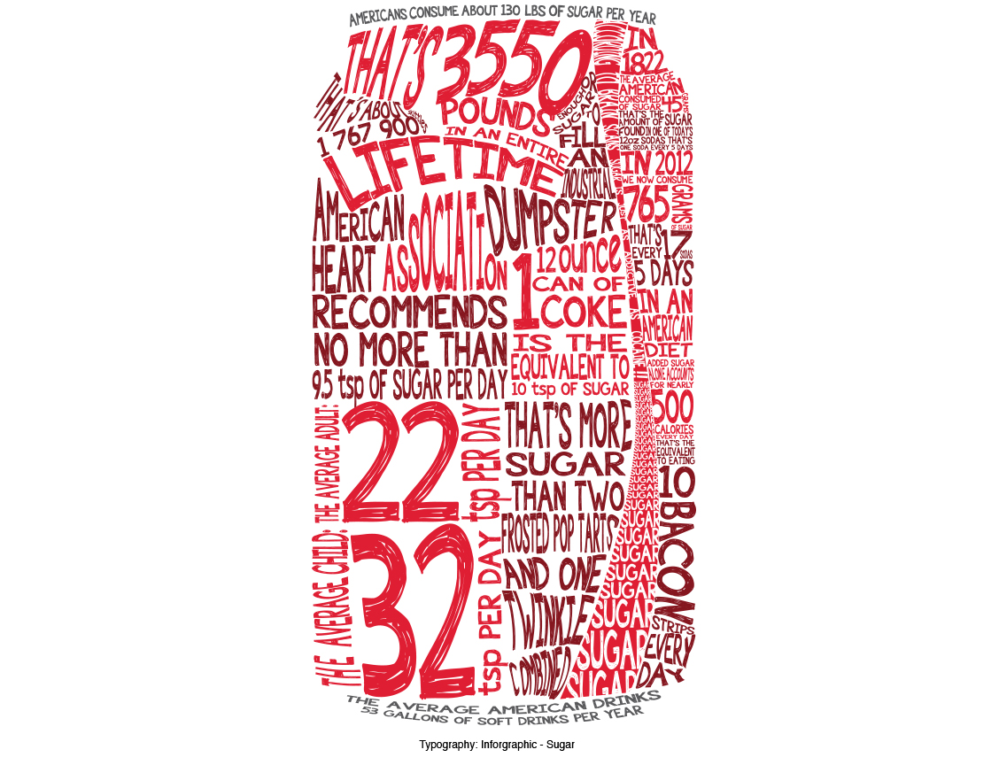
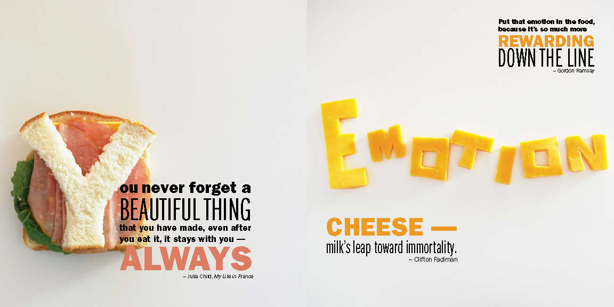

Portfolio
Here are a few of my best pieces, hope you enjoy!
(Nylon Magazine Layout)For this piece I designed a layout for a Ryan Reynolds article, but I gave it the same look as you would find in a Nylon Magazine spread. Their magazine spreads and layouts are much more different than a Rolling Stone magazine layout, which was interesting because I was able to play with shapes, large fonts and different ways to layout photographs. For the colour scheme, I stayed with the warm tones in the first photo of Ryan, on the front two pages, and I used a sans-serif font to keep it simple and modern, like the Nylon Magazine style. Even though it is simple and modern, it still has its large and bold aspects on each page.
(Sugar Infographic) For this piece I used many facts, stats and information about sugar. The subject itself interested me because we don’t know how harmful it is to eat too much sugar, which is important to know in today’s society. I thought it would be interesting to use the information and lay it out in a bold shape (like a can of coke). The red was used to suit the colour of the can, it is also very bright and demands attention. The font I used was more decorative and resembles marker or scribbling, which went well with the look of the piece because it’s so crazy and loaded with words. Both fit well together because they are equally as bold.
(Joy of Cooking) The full preview of this piece is attached separately because it was too large to fit onto one page. For this piece, I designed a quote book about the joys of cooking. Cooking is my second greatest passion, and I created a booklet of several quotes by famous chefs and cooks that I thought were interesting and inspirational. The second aspect of my book was that I took photos of food to create the focused words of each page. The colours I used complimented the food on each page, the overall look of the booklet is very colourful because that’s what cooking really looks like. Each quote focuses on a different topic, which is shown with a photo as well.